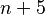
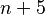
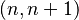
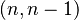

BigStitcher FRC
Overview
Fourier Ring Correlation (FRC) has become a popular and relatively unbiased method of estimating image quality/resolution recently, especially in localization-based superresolution microscopy. The main idea is to take two independent images of the same object, calculate their Fourier Tranforms and calculate the correlation of "rings" of increasing frequency in the two spectra. The rings should be correlated for low frequencies until one reaches the resolution limit of the microscope. The threshold frequency above which correlation drops is a good estimate of the highest frequency a microscope can resolve.
In SMLM, two independent images of the same structure are typically generated by splitting all localizations in half and reconstructing an image for both halves. In BigStitcher, we use the (integrated) FRC curve of neighbouring planes in the images as a quality control metric. The figure below shows the output of our quality control (FRC of blocks in images of a two-illumination dataset of a cleared mouse brain):

Usage
In the main window of BigStitcher, select the images in which you want to perform quality control, right click and select Quality (optional) › Image Quality Estimation (FRC).... This will bring up the following dialog:

Many parameters are similar to Image Fusion: You can set a bounding box for the resulting image, downsampling and whether to display or save results.
Parameters that are important to the actual quality estimation are:
- Relative FRC When this is activated we will not only integrate the FRC curve of the current image plane
 and it's neighbouring planes, but subtract a LOESS-smoothed FRC curve of planes  and
and it's neighbouring planes, but subtract a LOESS-smoothed FRC curve of planes  and  before integration. This reduces the effect of high-frequency fixed-pattern noise (e.g. sCMOS dark noise) on the quality metric. This means we have to calculate a second FRC curve, essentially doubling the computation time for this step.
before integration. This reduces the effect of high-frequency fixed-pattern noise (e.g. sCMOS dark noise) on the quality metric. This means we have to calculate a second FRC curve, essentially doubling the computation time for this step.
- Smooth Local FRC To get a smoother estimate of Quality, we can not only calculate FRC between image planes , but also  and average the integrals of the two curves. This increases computation time since we have to calculate yet another FRC curve.
The following two parameters essentially control the sampling of quality estimates in the images:
- FRC FFT Size Using the whole image planes for FRC calculation would give us only one value per z position. We therefore split the image planes into blocks and calculate FRC independently. This parameter controls the block size. Smaller blocks will give more localized quality information, but are also more susceptible to noise.
- FRC stepsize (z) Calculating (r)FRC at every plane of the images might is computationally expensive. We therefore only calculate quality at a subset of the image planes. Using this parameter, you can set the distance of planes at which a quality check is performend.
After clicking OK, quality images will be generated and displayed or saved.
Go back to the main page